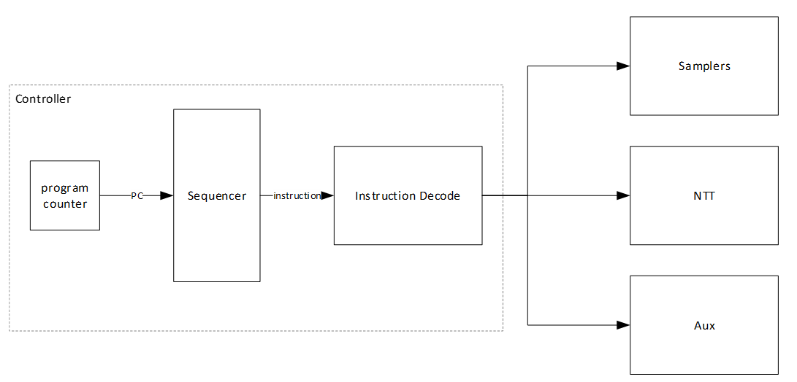
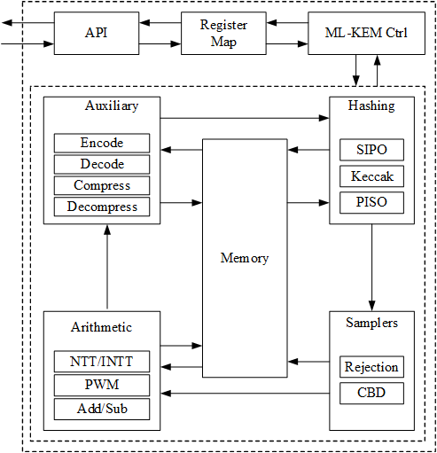

Adams Bridge (ABR)
The module is a post-quantum accelerator based on the Caliptra Adams Bridge design.
Algorithms:
-
ML-DSA-87 (FIPS 204) — key generation, signature generation and verification
-
ML-KEM-1024 (FIPS 203) — key generation, encapsulation and decapsulation
ML-DSA is the post-quantum signature path intended for secure boot: each owner
may be provisioned with an ML-DSA root public key alongside its classical key,
with REQUIRED_SIGNERS selecting which owners must sign and REQUIRED_ALGS
selecting, per owner, which of the two algorithms it must sign with (see
Life Cycle Controller (LCC)). SEP ROM does not use
this path today — it verifies a single classical RSA-3072 signature, and
combined classical + PQC signing is deferred to a later release.
The upstream ML-DSA and ML-KEM algorithm datapaths are shown in Adams Bridge ML-DSA reference architecture and Adams Bridge ML-KEM reference architecture, respectively.


These upstream diagrams describe the algorithm datapaths. The OCAH wrapper provides the AXI and key interfaces and exposes the working SRAM ports to the integrator, as described below.
1. OCAH Modifications
-
AXI4-lite key bus slave interface replaces the Caliptra Key Vault
-
AXI4 control/status bus slave interface, bridged to the core’s native AHB-lite
ABR is the one accelerator in the subsystem that is not an OpenTitan TL-UL
design, so its bus pipeline ends in AHB-lite rather than TL-UL.
sep_crypto_abr_wrapper narrows its 64-bit AXI4 slave port to 32 bits,
converts it to AXI4-lite, and drives abr_top through axi_lite_to_ahb, which
issues one single AHB transfer at a time and returns its response before it
accepts the next access. The wrapper is port SEP_CRYPTO_AXI_ABR of the crypto
demux and occupies a 64 kB aperture at 0x1094_0000.
Every ABR register is 32 bits wide, and the aperture is accessed in words:
-
A 32-bit access reads or writes one register.
-
A 64-bit access at an 8-byte-aligned address is carried out as two 32-bit accesses to the two registers it covers, low address first. A 64-bit access whose address has bit 2 set reaches only the upper register.
-
Each word of a write is taken by its own strobe. A word whose strobe is empty is not written, so a 64-bit write that strobes one word writes that word alone, with OKAY. A word whose strobe is partial is not written, and the access is answered with SLVERR; in a 64-bit write the other word is still written when its strobe is full.
abr_topties the register block’s byte enables high and the AHB slave zero-extends a narrow write, so a partial write would otherwise overwrite the rest of the register. -
A narrow read is performed as a read of the whole register that contains it. Only the bytes it names are returned; the other byte lanes read as zero.
Any number of reads and writes may be outstanding on the aperture from any mix of masters. They are performed one at a time, and each returns the value of the address it names.
The crypto demux decodes the aperture only as far as the register map extends. It forwards an offset inside that extent to ABR and answers every access past it with DECERR itself, whatever its size or strobes.
Inside the extent there is no further decode. The vendored register block consumes every offset bit and applies no address-validity or permission check, so the extent is fully consumed but not fully populated: register objects sit at coarse offsets with unused space between them.
The SEP memory map states how a word
access to an unpopulated offset answers, inside the extent and past it.
A partial-word write inside the extent is answered with SLVERR wherever it
lands (ABR access size). ABR never drives hresp to error, so the AHB error
response its slave interface implements is unreachable. A burst is answered
with DECERR by the demux (Single-Beat Access Only).
Software shall not rely on a bus error to detect a malformed ABR register
address inside the extent.
The absence of decode inside the extent follows from the vendored
collateral rather than a SEP decision.
abr_reg.sv is generated in the Adams Bridge repository, not by the OCAH
register flow, and address-validity decode is a PeakRDL-regblock exporter option
rather than a SystemRDL property; the committed file predates that option.
Changing it is an upstream change.
|
Upstream, Adams Bridge draws its secrets from the Caliptra Key Vault. OCAH does
not instantiate that vault. The Key Manager’s private AXI4-Lite key bus
terminates inside the wrapper at the abr_wrapper_key_reg CSR block — the same
convention as the AES and OTBN wrappers — and sep_abr_kv_shim presents the
recovered dual-share secrets to abr_top over the Caliptra kv_read / kv_write
port protocol. Only the Key Vault client helpers are vendored; the vault storage
block is not compiled. This leaves the vendored core unmodified while giving ABR
the same kind of key path as every other accelerator, one mastered by the Key
Manager.
ABR is delivered seeds rather than keys, and is the only accelerator with more
than one delivery destination. Four blocks are qualified independently — MLDSA_SEED, MLKEM_SEED_D, MLKEM_SEED_Z and MLKEM_MSG — each carrying
eight words per share with its own KEY_CTRL.KEY_VALID, in the format given in
Key Manager Key Delivery. The ML-DSA seed and the ML-KEM message are read as single
256-bit values. The ML-KEM seed is read as one 512-bit value formed by
concatenating MLKEM_SEED_D followed by MLKEM_SEED_Z, so that read completes
only when both blocks are valid. Software shall enable the seed read before
starting an operation that consumes a delivered seed.
The ML-KEM shared key travels in the opposite direction, making this the only
delivery destination that is also a source: the accelerator writes the shared
key into MLKEM_SHARED_KEY.KEY, and on the final word sets that block’s
KEY_CTRL.KEY_VALID and IRQ_STATUS.KEY_VALID, which raises the gated
shared-key interrupt consumed by the Key Manager.
The working SRAM is brought out of the wrapper as packed
abr_mem_req_t / abr_mem_rsp_t structs. Word-write channels are we / re /
address / data; sig_z and pk also carry one-bit-per-byte wstrobe.
SEP_ABR_SRAM_LATENCY is the macros' native registered-read latency (default 1).
SEP_ABR_MASKING_EN (default 1) selects Adams Bridge 2-share DOM: thirteen 1R1W
macros versus nine, plus a second NTT. That choice changes ABR internal behavior
(sequencing, SCA, memory topology), not merely throughput.
ABR has no alert channel — it is the only crypto accelerator that reports faults
solely by interrupt (Adams Bridge error and notification in
SEP CPU Interrupt Vector Map), plus a gated ML-KEM shared-key interrupt
consumed directly by the Key Manager. Whether the block is present in a build is
controlled by SEP_ABR_EN, which always implies the vendored RTL’s CALIPTRA
define; when it is absent, both the crypto crossbar port and the Key Manager key
bus are terminated with AXI4-Lite error slaves.
Adams Bridge does not auto-return to its RESET state when an operation
finishes. The sequencer parks at the operation’s end state with STATUS.VALID
set, and STATUS.READY re-asserts only after a zeroize or a reset. Firmware
therefore detects completion from VALID, and must issue a zeroize between
back-to-back operations.
|
Consult the Adams Bridge documentation for the authoritative core functionality of the IP. Its CSRs are defined by the vendored Caliptra register package rather than by an OCAH PeakRDL source, so unlike the other accelerators they do not appear in Detailed Register Map.